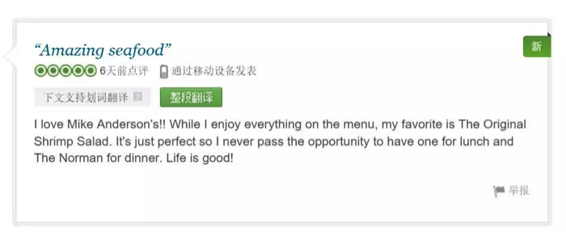

葬身火海后又满血复活，Ta是怎么做到的？
Hello~我是你的餐厅“经纪人”！
优良的口碑，让MAS实实在在的成了餐厅界的“网红”。平日里，慕名而来的游客让MAS几乎天天食客爆满；而到了节日，当地企业更是蜂拥而至，各种爬梯（Party）玩得不亦乐乎。

顾客给“网红”MAS的评价
▼▼▼
通常，明星走红后，都会有经纪人帮忙打理琐碎事务；每日客（bu）流（kan）爆（zhong）棚（fu）的“网红”MAS餐厅，也做了一个决定：请一个“经纪人”。
▼▼▼
在一家IT公司（Systems Services）的介绍下，MAS结识了他的餐厅“经纪人”——联想ThinkServer。
你专心服务客人，剩下的就交给我吧！
MAS餐厅对联想ThinkServer很信任，不但让它掌管了餐厅的10个POS终端，还令其管理涵盖MAS餐厅经营全流程的数据库。不论是事关店内安全的监视系统、持续跟踪客人评价与喜好的票据信息，或是记录库存和销售报表，甚至是记录员工工时，一切都在联想ThinkServer的照料下，井然有序的进行着。

联想ThinkServer揽下了琐碎繁杂的工作，让MAS员工的精力被大量释放。更美味的食物、更优质的服务，让MAS即使每每客流爆棚，也依然能赢得更多的回头客。不过…你以为“网红 x 经纪人”的组合从此过了上幸福生活？
NO!
一场大火，让一切几乎毁于一旦……
▼▼▼

为了你，要好好活下去
2011 年12 月，一名纵火犯在MAS餐厅纵火，餐厅的屋顶不久便在熊熊烈焰中崩塌。虽然事故没有造成人员伤亡，但在最靠近火源的办公室中的联想ThinkServer并没有这么幸运，经过高热、 烟气和水渍的损害，它的外表已经被烧得面目全非。
但是！
经过Systems Services的专业检测，虽然外观严重受损，但联想ThinkServer完好无损的把所有数据都保存了下来，简直令人惊叹。MAS立即用一台新的联想ThinkServer还原了所有数据，财务报表、监控影像等关键信息毫发无损。很快，完成了重建的MAS又重新开张，MAS与联想ThinkServer继续了他们的完美组合。
▼▼▼
“联想的硬件非常可靠，我们认为它是适合我们客户需求的最佳解决方案。“
——Systems Services员工Kyle Robinson